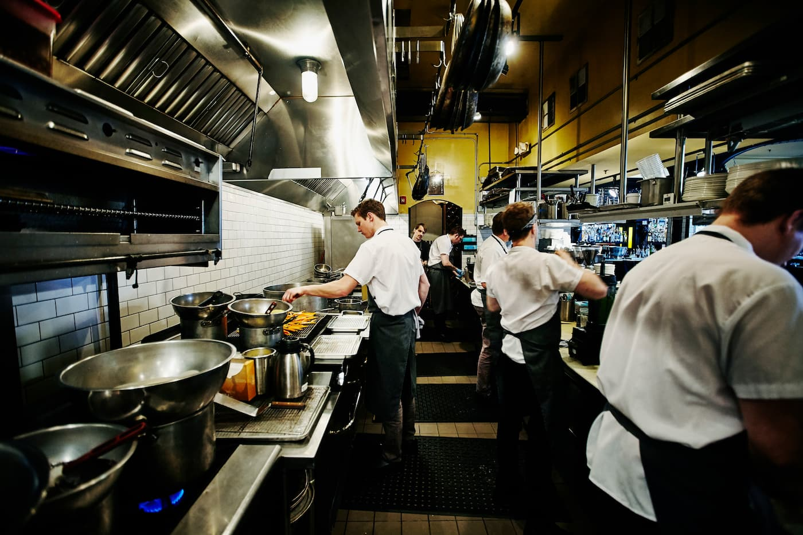

About Burnt Ends
Burnt Ends is more than just a restaurant — it's a culinary experience that blends innovation, craftsmanship, and passion. Our team of chefs takes pride in creating dishes that surprise, delight, and inspire. Every meal tells a story — one of smoky flavors, creative ingredients, and unforgettable memories.

Our Story
Founded in 2021, Burnt Ends began as a small pop-up eatery with one mission: to bring the bold flavors of open-fire cooking to the modern table. What started as a weekend passion project quickly turned into a full-scale culinary movement.
Our portfolio includes collaborations with local farmers, international food festivals, and culinary schools. We believe food should connect people — and at Burnt Ends, every dish does just that.

Our Team
Our talented team is made up of passionate chefs, designers, and food lovers who believe that cooking is both an art and a science. From sourcing ingredients to plating the final dish, each member of our crew adds their own creative spark to the process.
Together, we’ve built a portfolio of signature dishes that reflect Burnt Ends’ philosophy — unexpected flavors, bold textures, and timeless hospitality.